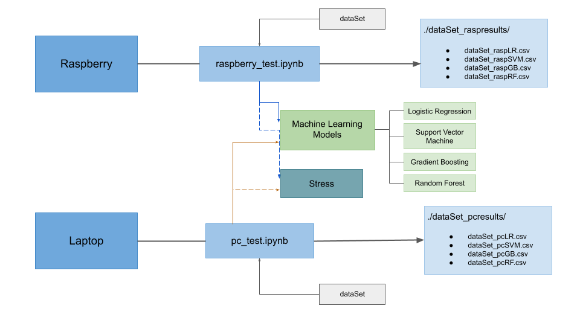

Machine Learning on devices with limited computing capacity
Nowadays Machine Learning and IoT has become some of the most developed and researched fields in technology. The amount of applications these could offer are infinite.
The need to use small devices for IoT applcations leads us to consider the Raspberry as an option to carry out these tasks. Its small size and its ability to interact with the enviroment through its sensors makes it a perfect tool to develop a project of these characteristics. That is the reason why this research will evaluate this device to perform automatic learning tasks.
In order to do this it is going to be generated through scikit-learn , four differents Machine Learning models under certain computational load conditions. The selected automatic learning models are: Logistic Regression, Support Vector Machine, Gradient Boosting and Random Forest.
These Machine Learning models are going to be subjected to different test in order to prove the capacity of the Raspberry to know if this dispositive is truely a good tool to develop and execute this kind of algorithms. The results of these tests are going to be compared with the results of the same automatic learning models but executed and tested in a more powerful machine. This will let us know how far is the performance of the Raspberry from a higher capacity machine. The achivement of all this is going to be explained later.
Hardware Components
In order to develop this project the following hardware components were required.
Raspberry Pi 4B
Raspberry Pi 4B is a low cost credit-card sized computer, the aim of which is to make informatics accesible to everyone. Its features makes it a good choice for implementing IoT applications but its lower computational capacity may not be sufficient to carry out such tasks. That is what we are trying to dicover through this research work.
Some of it's components are:BME280 Sensor
Sensor developed by Bosh which provide information about temperature, atmosferic pressure and relative humidity.
LDR Sensor
This is a photoresistor so it will detect if there is light or not on its enviroment. To be able to use this with the Raspberry is necesary to connect a conversor to it, in this project it is used the HW-103 conversor.
Laptop
In order to compare the Raspberry results with a higher capacity machine it is going to be used a Laptop. The laptop used is an HP 15s-fq1008ns with 8 cores in total. It has Ubuntu 20.04 as Operative System. With this will have real knowledge of how well or badly the Raspberry is performing.
Test Structure
As mentioned before, to test the potential of the Raspberry, four diferent kinds of Machine Learning models are going to be trained and tested with differents dataSets.
Each model will be subjected to four tests. The difference between those tests is the number of cores that are going to be stressed. The laptop will also be subjected to these four tests to compare both results but with some modifications. As mentioned before the laptop has in total 8 cores, twice as many as the Raspberry has, so in order to put both machines in the same computational load situation, the number of stressed cpus change.
The defined testing levels are:
Idle Level. The Raspberry or laptop is not subjected to any kind of extra stress.
Low Level. Only one of the cores of the Raspberry is stressed. While in the laptop two cores are stressed.
Middle Level. Two of the Raspberry cpus are going to be stressed, in the laptop four cores. In both machines there are stressed half of the total number of cores.
High Level. All the cores of the Raspberry, which are four, and laptop, which are eight, will be exposed to higher computational load.
From each of the test it is going to be obtained some relevant information that will allow us to evaluate the Raspberry as an optimal dispositive for Machine Learning applications or not. The above image show the general architecture of the tests. As it can be seen in it, the information obtained from each model will be stored on its own file.
DataSets
A total of three different dataSets were used to train and test the models. Two of them composed of synthetic data and the last one was made with sensed data.
Room Occupancy dataSet
This data set, obtained from Kaggle, provides information about temperature, light, humidity, CO2. The last column of the dataSet provides information of the state of the room, if it is occupied or not. In total the dataSet has 20560 samples of an office room of 5.85mx3.50mx3.53m.
The models trained with this dataSet will be able to predict if the room is empty or if there is someone in it.
KDD Cup 1999 Data
The kdd cup 1999 data set was created to use it in The Third International Knowledge Discovery and Data Mining Tools Competition, to create a predictive model capable of distinguish between bad connections and good connections. This can be obtained from the Kaggle web page.
This data set has a huge number of total lines, in this project we are going to use only the 20% of the total data set, which are about 988040 lines of samples. In order to use this data set is necessary to pre-process the data and remove some lines or columns which may difficult the trainning of the model.
Mi dataSet
As seen before in this projects are used two sensors. With the data provided by these sensors it has been created a total new data set that will contain information of light, temperature, relative humidity and pressure. Storing this data and knowing if there are people in the room where the sensors are located, we can create another data set that will train a model to know by the sensors measures, if there is someone in the room or not. So this data set will allow us to train a model similar to the one that we can ontain using the Room Occupancy data set but with our own information.
In the next picture you can see an example of the sensor data recorded durin 2h 40min. The zones which have a gray background are the moments of time where there was someone in the room.
Results
Bellow are some charts that show the most relevant results of the tests.
Conclusions


Collaborative tools to design user experience
Use our tools to explore your ideas and make your vision come true. Then share your work easily.
- Less routine – more creativity
- Hundreds of thousands saved
- Scale budgets efficiently
Unify is an incredibly beautiful and mobile-first project on the web.
Unify is not only for developers but also for designers, and includes a Figma file.
Whether you're a startup or a global enterprise, learn how to integrate with Unify.
Use Unify thoroughly thought and automated libraries to manage your businesses.
Unify template can be easily customized with its cutting-edge components.
Every component and plugin is well documented with live examples.

We tackle the challenges start-ups face
Besides working with start-up enterprises as a partner for digitalization, we have built enterprise products for common pain points that we have encountered in various products and projects.
- Easy & fast designing
- Powerful features
- User Experience Design
It's all about speed
We provide you with a test account that can be set up in seconds. Our main focus is getting responses to you as soon as we can.
Amazing people to work with. Very fast and professional partner.
-
45k+
users - from new startups to public companies
-
23%
increase in traffic on webpages with Looms
-
9.3%
boost in reply rates across sales outreach
-
2x
faster than previous Unify versions
Less overhead, more collaboration
Start with award-winning templates, then customize to fit your style and professional needs.